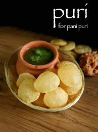
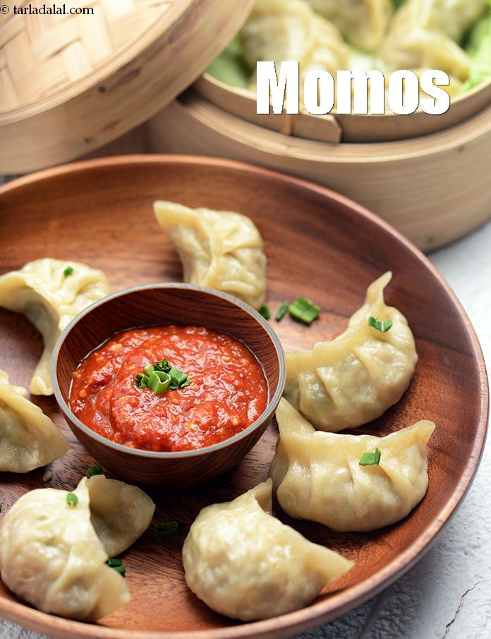

Panipuri
Ingredients
- Aloo masala
- Mitha Pani
- Dahi
- Khatta Pani
- Sew
- Fulki
Recipe
- Boil the potatoes in salted water with a generous pinch of salt until tender, then drain well and return them to the pot along with the rest of the ingredients.
- Using a masher, mash and mix well.
- इसमें 1 बड़ा चम्मच पिसी हुई इमली और 3.5 से 4 बड़े चम्मच गुड़ पाउडर या कसा हुआ गुड़ मिलाएं।
- Heat the oil to 180°C (356°F) and fry the puris for 3-4 minutes or until they have puffed up and turned golden brown.
- o assemble, make a hole in the puris, add a teaspoon of the potato filling, then dip into the sauce of your choice (recipes below).

MOMOS
Ingredients
- Maida
- Paneer
- Vegetables
- Water
- Spices
- Salt
Recipe
- Firstly, prepare stuffing by heating 3 tsp oil and saute 3 clove garlic, 1 inch ginger and 2 chilli.
- Also, add 2 tbsp spring onion and saute on high flame.
- Further, add 1 cup carrot and 2 cup cabbage. stir fry on high flame.
- Now add ½ tsp pepper and ½ tsp salt.
- Additionally, 2 tbsp spring onion and stuffing mixture is ready.
- Further, pinch a small ball sized momos dough and flatten.
- Now dust with some maida and start to roll using a rolling pin.
- Roll to almost medium thin circle. around 4 – 5 inch in diameter. make sure you roll from sides and keep the centre slightly thick.
